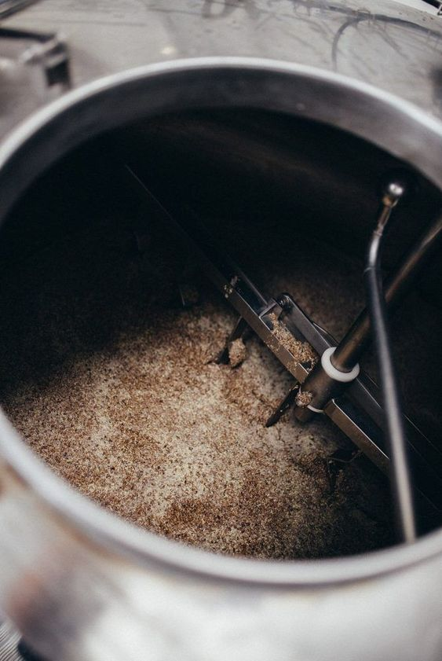
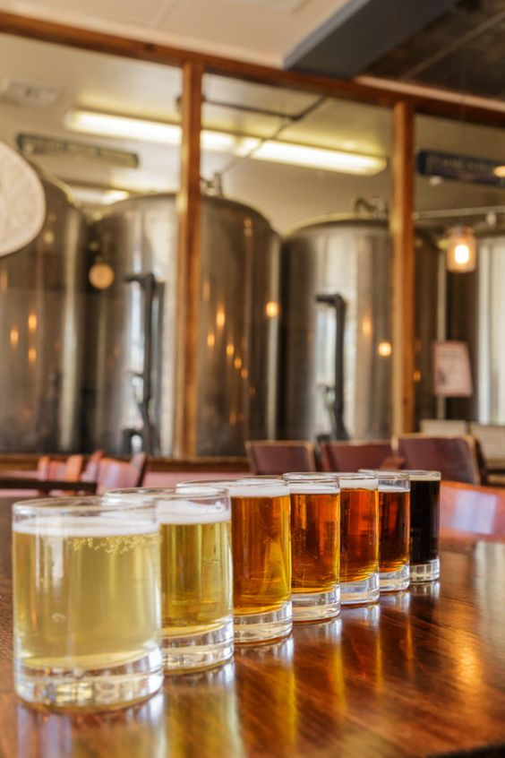

Bag Produktionen
Velkommen bag kulisserne hos ZeroBuzz Brew, et mikrobryggeri dedikeret til at levere de bedste alkoholfrie øl. Tag en dybere dyk ned i hjertet af vores bryggeri og opdag den spændende verden af ølproduktion. På denne side vil vi tage dig med bag kulisserne og give dig et indblik i vores passion for håndværk, kvalitet og innovation, der ligger til grund for hvert eneste glas øl, vi brygger. Så hvordan brygger vi vores alkoholfrie øl? Lad os tage et kig:
1. Udvalgte ingredienser og Udstyr:
Vi starter med omhyggeligt udvalgte ingredienser af højeste kvalitet. Fra malt og humle til gær og vand, hver ingrediens er nøje udvalgt for at sikre, at vores øl opnår den perfekte smag og konsistens. Vi har selvfølgelig også sørget for at alle vores bær og frugter kommer fra de bedste producenter, men fokus på etik og miljø. Vores bryggeri er udstyret med topmoderne bryggeudstyr, der giver os mulighed for at kontrollere hver fase af bryggeprocessen med præcision og nøjagtighed. Fra vores mæskekar og kogekar til vores gæringstanke og tappeudstyr, investerer vi løbende i ny teknologi for at forbedre vores produktionsprocesser og sikre den bedst mulige kvalitet i vores øl. Gennem kombinationen af højkvalitetsingredienser og topmoderne udstyr er vi i stand til at skabe øl af enestående kvalitet, der er fyldt med smag, karakter og dybde. Vi tror på, at det er denne dedikation til håndværk og kvalitet, der adskiller vores øl fra mængden og gør dem til en oplevelse værd at nyde igen og igen.
2. Omhyggelig brygning:
Bryggeprocessen er hjertet af vores håndværk her hos ZeroBuzz Brew, hvor vi omdanner nøje udvalgte ingredienser til den skønne drik, vi kalder øl. Lad os tage dig med på en rejse gennem de forskellige faser af vores bryggeproces, hvor passion, præcision og kreativitet går hånd i hånd for at skabe øl af højeste kvalitet. 1. Mæskning: Bryggeprocessen begynder med mæskning, hvor vi blander maltet med varmt vand for at frigive sukkerarter og andre opløselige stoffer. Den resulterende blanding, kendt som mæsk, hviler i et stykke tid for at tillade enzymatiske processer at omdanne stivelsen i malten til sukkerarter, der kan gæres til alkohol og kuldioxid. 2. Kogning: Efter mæskning opvarmes mæsken til kogning, hvor vi tilsætter humle og eventuelle andre krydderier eller smagsstoffer efter behov. Kogningen tjener flere formål, herunder sterilisering af væsken, udvinding af humlebitterhed og aroma, samt koncentration af øllets smag og farve. 3. Køling og filtrering: Efter kogning afkøles væsken hurtigt for at stoppe enzymatiske processer og fjerne uønskede stoffer og proteiner. Derefter filtreres væsken for at fjerne humle- og maltrester og opnå en klar og ren væske klar til gæring.

4. Gæring: Den filtrerede væske overføres til gæringstanke, hvor gæren tilføjes for at starte gæringsprocessen. Gæringen kan være enten under- eller overgæring, afhængigt af den ønskede ølstil. Under gæringen omdanner gæren sukkerarterne til alkohol og kuldioxid, mens den også bidrager til øllets smag og aroma. 5. Modning, filtrering af alkoholen og tapning: Efter gæringen overføres øllet til modningstanke, hvor det lagres ved kontrollerede temperaturer i en periode for at udvikle sin fulde smagsprofil og klarhed. Dernæst anvender vi en skånsom filtreringsproces, herunder kulfiltrering og vakuumdestillering, for at fjerne alkoholen fra vores øl, mens vi bevarer smagsstoffer og aromaer intakte.
3. Pakning og Distribution: Fra Bryggeri til Jer
Når vores alkoholfri øl har gennemgået modning og filtrering, er det tid til at pakke og distribuere den, så den kan nydes af vores kunder, herunder festivalgæster. Pakning: Efter den alkoholfrie øl er klar, overføres den til vores avancerede tappeanlæg. Her bliver øllet forsigtigt tappet på flasker, dåser og tønder for at bevare dens friskhed og kvalitet. Vi anvender følgende pakningsmetoder for at sikre, at øllen når vores kunder i optimal stand: Flasker: Flaskerne vaskes, steriliseres og fyldes med øl under strenge hygiejneforhold. Efter fyldning bliver flaskerne forseglet med kapsler, og etiketterne sættes på for at give dem deres karakteristiske udseende. Dåser: Dåserne fyldes og forsegles hurtigt for at minimere iltning og bevare øllets smag. Vores dåser er designet til at beskytte øllet mod lys og luft, hvilket hjælper med at bevare den friske smag længere. Tønder: Til festivaler og større arrangementer bruger vi genanvendelige tønder, som sikrer en miljøvenlig og effektiv transport af større mængder øl. Distribution: Når øllet er pakket, er næste skridt at få det ud til vores kunder. Vi samarbejder med pålidelige distributører og logistikpartnere for at sikre, at vores øl når frem i perfekt stand og til tiden. Her er, hvordan vi distribuerer vores øl til festivaler og andre events: Direkte Levering: For store festivaler som Northside og Tinderbox sørger vi for direkte levering af vores øl i tønder og dåser, så det kan serveres frisk og koldt til festivalgæsterne. Kølebiler: Vi bruger specialudstyrede kølebiler til at transportere vores øl, så den forbliver ved den rette temperatur under hele rejsen. Dette sikrer, at festivalgæsterne får en forfriskende og velsmagende oplevelse. Miljøvenlig Emballage: Vi stræber efter at minimere vores miljøpåvirkning ved at bruge genanvendelige og bæredygtige materialer til vores emballage. Dette inkluderer genbrugspap til vores dåsekasser og miljøvenlige etiketter.
4. En smagsoplevelse uden kompromis
Hos ZeroBuzz Brew er vi stolte af vores evne til at levere en alkoholfri øl, der ikke går på kompromis med smagen. Vores omhyggelige proces, fra udvælgelsen af ingredienser til den avancerede teknik, sikrer, at hver tår af vores øl er en oplevelse fyldt med smag, karakter og dybde. Vi inviterer dig til at nyde vores øl og opdage, hvordan vi har kombineret traditionel bryggekunst med moderne innovation for at skabe en unik smagsoplevelse, som du kan nyde igen og igen – helt uden alkoholens virkning. Skål!